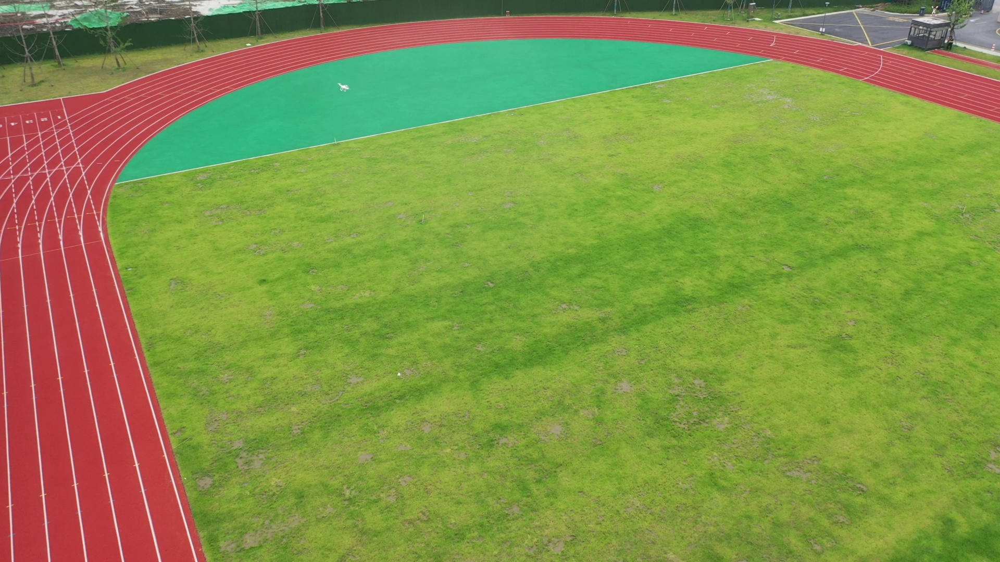
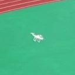
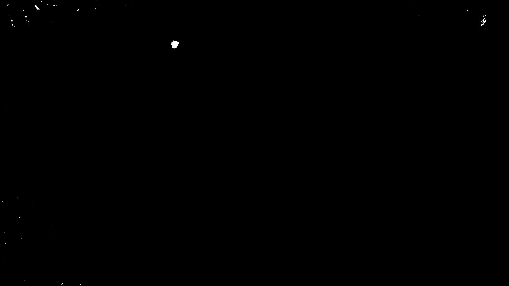
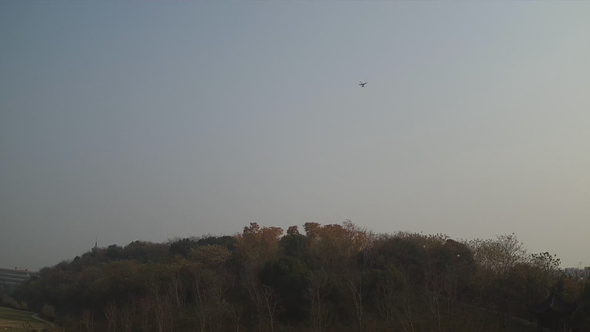
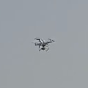
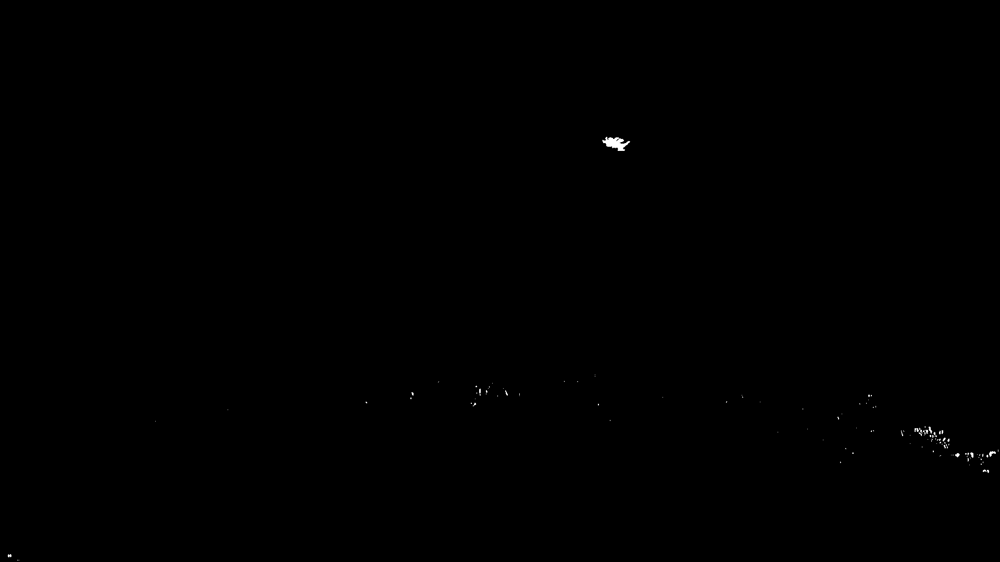
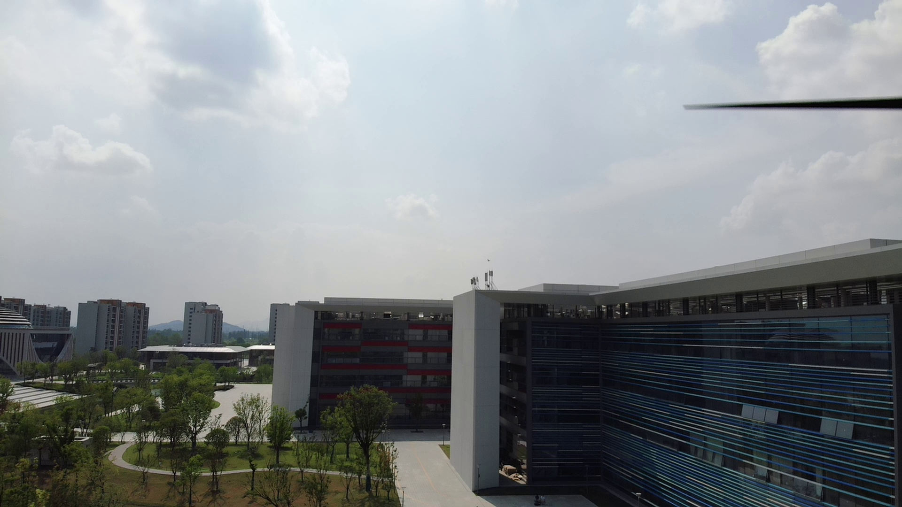
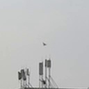
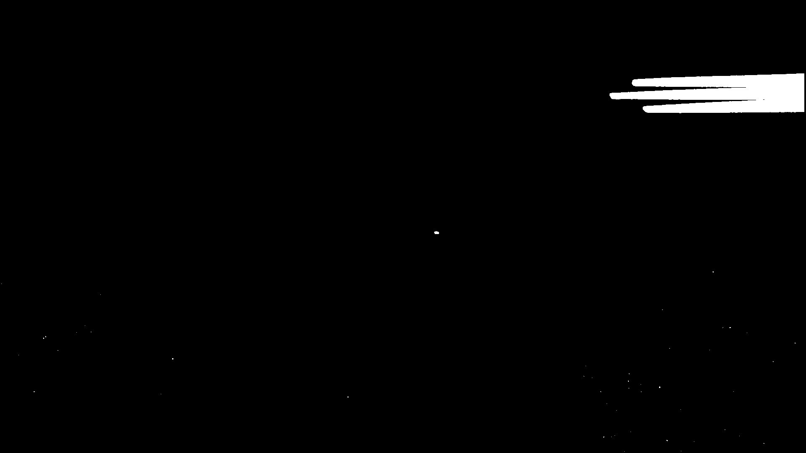

mAP50 Overall detection
Counts a detection as a match when box overlap reaches IoU 0.50. Its more forgiving overlap requirement makes it useful for assessing how well a model finds objects overall, without demanding a very tight box.
A drone can occupy only a handful of pixels. Explore how two trained models find it, then look closer at the boxes they predict.
Appearance captures what a drone looks like; motion helps reveal where something is moving. From a sequence of video frames, we compensate for camera movement, compare nearby frames, and threshold the remaining changes to produce a motion mask. These masks highlight possible moving regions and are fused with RGB appearance features in the model backbone.
We tested different ways and locations to combine these cues: combining RGB and motion at the input, or processing them separately before merging features at full resolution or after early backbone stages, P1 and P2. We also explored attention at the fusion point to investigate how the model combines the two feature streams.
Compare the RGB frame with its motion mask, then inspect the same region up close.
phantom09 · frame 338



phantom47 · frame 2090



phantom46 · frame 1696



White regions mark changes that remain after alignment; black regions fall below the motion threshold. These examples show strong responses around the drone, but a motion mask can also contain background changes and is not an object label. Both crops use exactly the same coordinates; the saved masks are shown without enhancement.
Mean average precision (mAP) summarizes precision and recall across confidence thresholds. Intersection over union (IoU) measures the overlap between a predicted box and its ground-truth box.
Counts a detection as a match when box overlap reaches IoU 0.50. Its more forgiving overlap requirement makes it useful for assessing how well a model finds objects overall, without demanding a very tight box.
Averages AP at ten IoU thresholds, from 0.50 to 0.95 in steps of 0.05. The stricter thresholds make it more sensitive to how accurately the model positions and sizes each box.
These models achieved the highest mAP50 and mAP50–95, respectively, among the completed runs reviewed for this demo.
Flight samples are videos from the dataset that each model has not seen during training.
Model predictions are shown only at confidence ≥ 0.25 (25%).